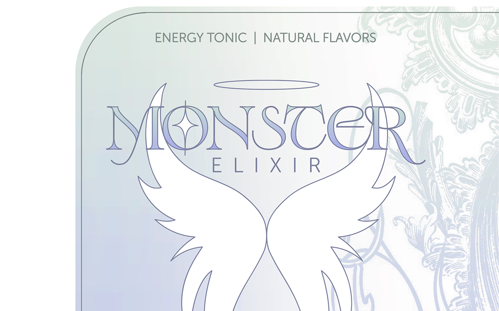
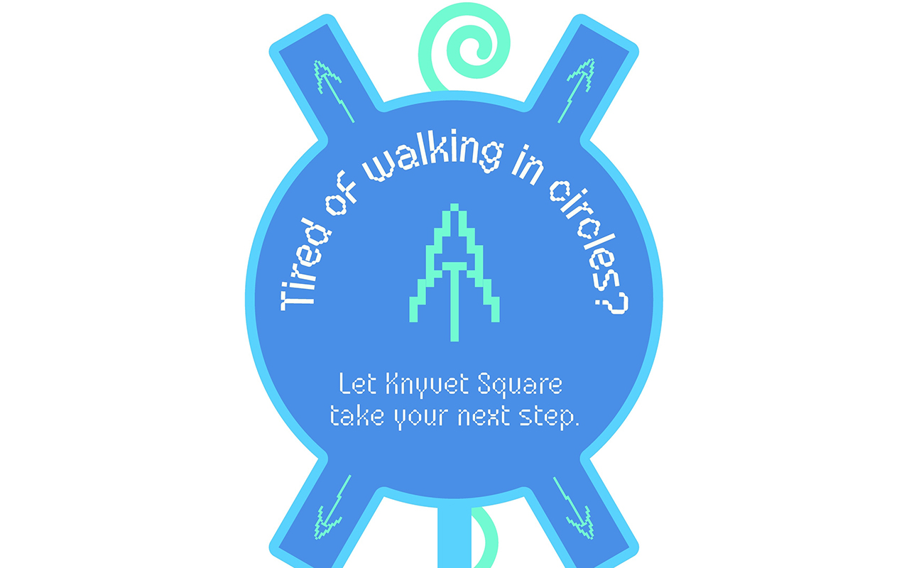
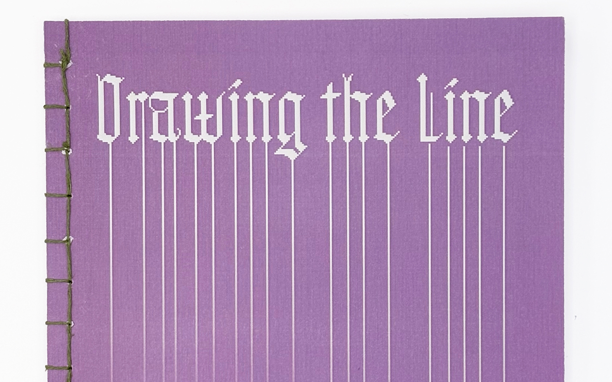
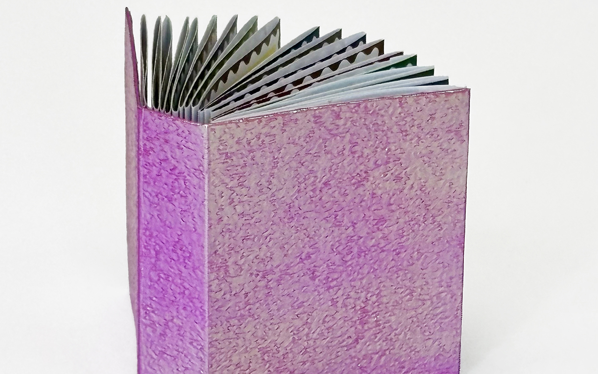
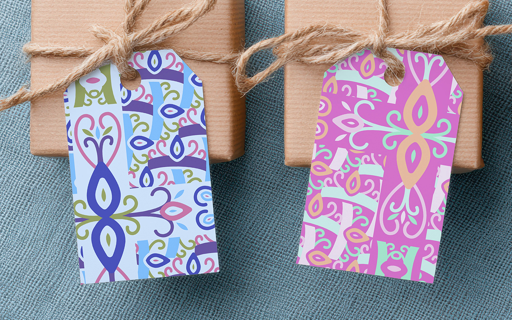
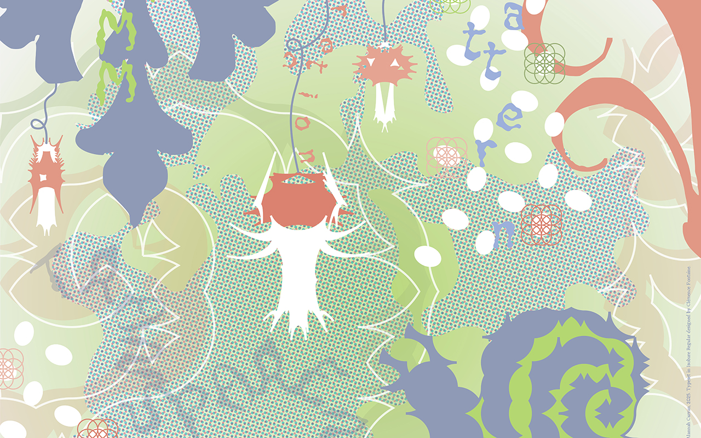
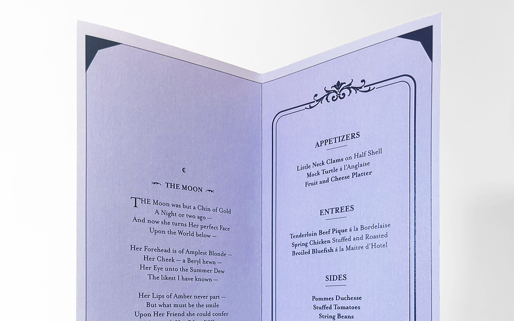

Book-making Typography

Zine-making

Poster Design

Editorial Design

Branding Logo Design

Poster Design Album Design

Data Visualization Poster Design

Wayfinding Signage

Book-making Editorial Design

Stamp Design Typography

Pattern Design

Packaging Design Time-based Narrative

Poster Design

Menu Design Typography